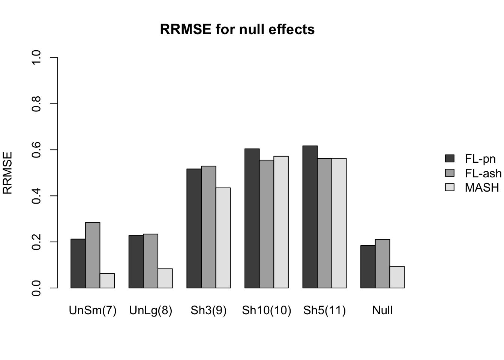
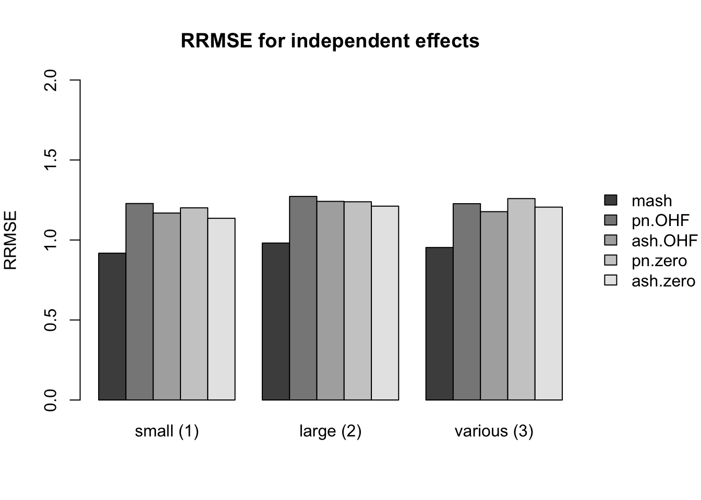
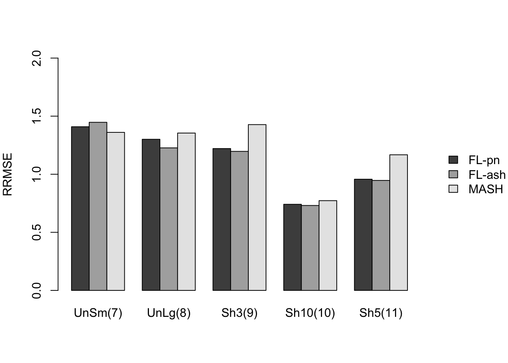
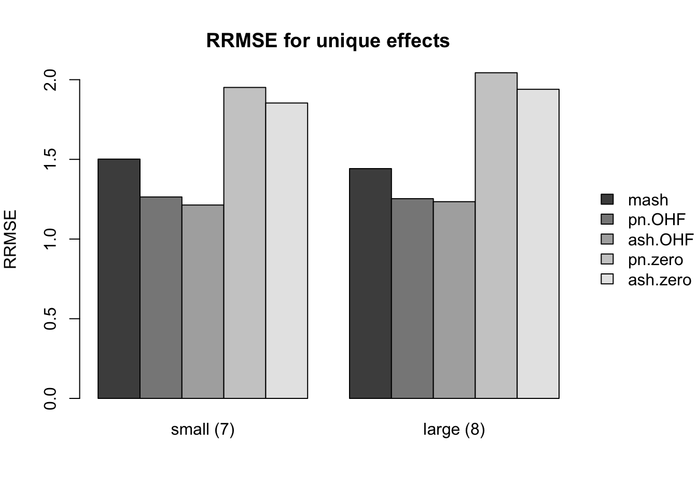
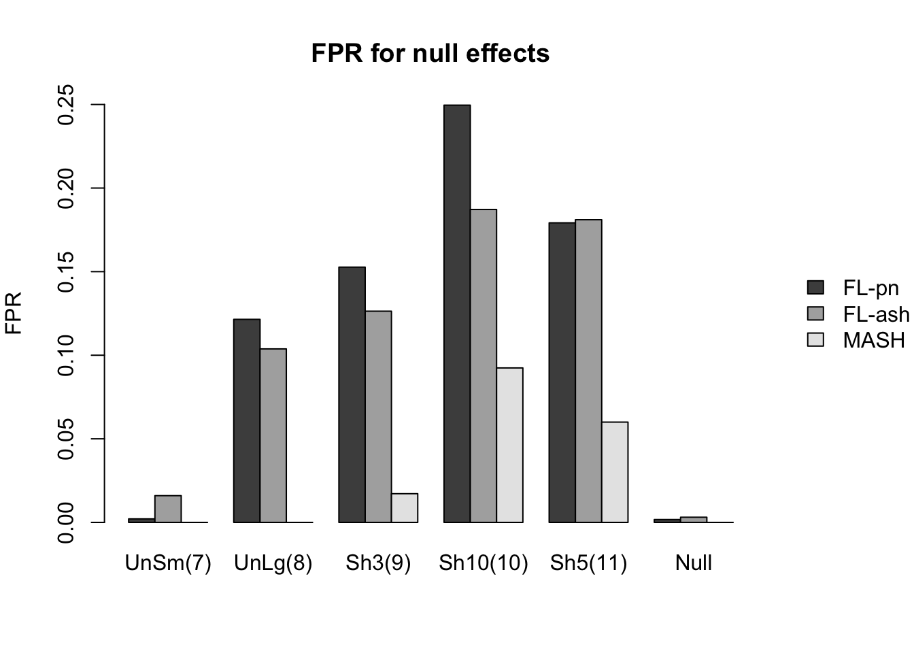
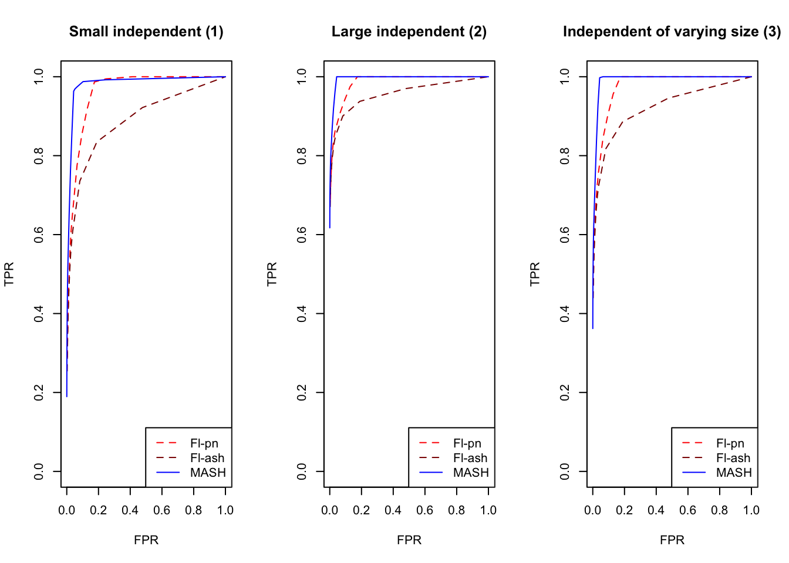
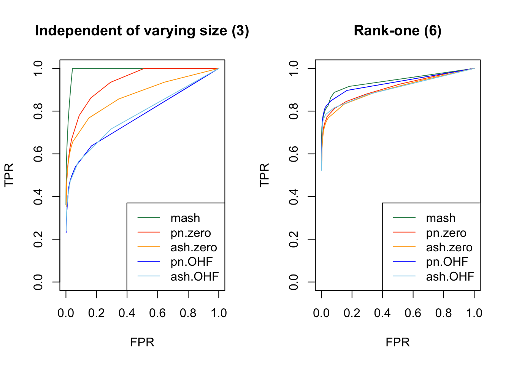
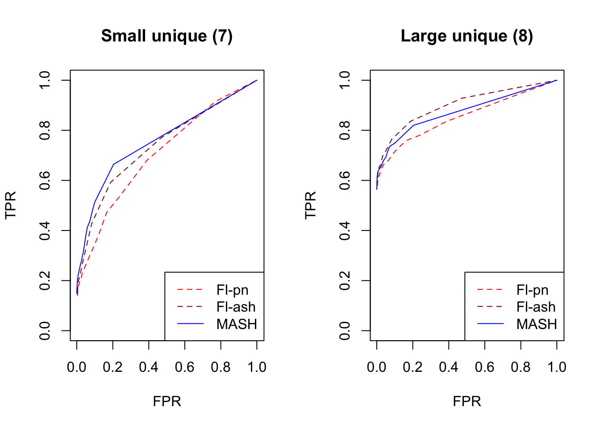

Last updated: 2018-06-24
workflowr checks: (Click a bullet for more information) ✔ R Markdown file: up-to-date
Great! Since the R Markdown file has been committed to the Git repository, you know the exact version of the code that produced these results.
✔ Environment: empty
Great job! The global environment was empty. Objects defined in the global environment can affect the analysis in your R Markdown file in unknown ways. For reproduciblity it’s best to always run the code in an empty environment.
✔ Seed:
set.seed(20180609)
The command set.seed(20180609) was run prior to running the code in the R Markdown file. Setting a seed ensures that any results that rely on randomness, e.g. subsampling or permutations, are reproducible.
✔ Session information: recorded
Great job! Recording the operating system, R version, and package versions is critical for reproducibility.
✔ Repository version: 42cd89c
wflow_publish or wflow_git_commit). workflowr only checks the R Markdown file, but you know if there are other scripts or data files that it depends on. Below is the status of the Git repository when the results were generated:
Ignored files:
Ignored: .DS_Store
Ignored: .Rhistory
Ignored: .Rproj.user/
Ignored: docs/.DS_Store
Ignored: docs/images/.DS_Store
Ignored: output/.DS_Store
Untracked files:
Untracked: output/sims2.rds
Unstaged changes:
Modified: code/sims2.R
Here I study in detail simulations from a MASH model similar to the “model with independent, unique, and shared effects” from my larger simulation study. I run 10 simulations, each of which simulates data for 20 conditions and 1000 tests. I use 13 different covariance structures, each of which are used to simulate 25 tests. The other 675 tests are null across all conditions.
Effects were nonnull for all conditions and generated independently from a \(N(0, \sigma^2)\) distribution. I simulated \((1)\) small independent effects (\(\sigma^2 = 2^2\)), \((2)\) large independent effects (\(\sigma^2 = 5^2\)), and \((3)\) independent effects of varying sizes (with \(\sigma^2\) ranging from \(1^2\) to \(5^2\)).
Notice that cases 1 and 2 are covered by “canonical” covariance matrices in MASH, but 3 is not.
Effects were nonnull for all conditions, with an effect size that was identical across conditions. The unique effect size was generated from a \(N(0, \sigma^2)\) distribution. Similar to the above, I simulated \((4)\) small identical effects (\(\sigma^2 = 2^2\)) and \((5)\) large identical effects (\(\sigma^2 = 5^2\)).
Both of these cases are covered by canonical covariance matrices in MASH.
These are similar to “identical effects” in that the covariance matrix has rank one (so that conditions 2-20 are always fixed multiples of condition 1), but here, the effect sizes vary.
\((6)\) The effect size for condition 1 was generated from a \(N(0, 1)\) distribution, and conditions 1-20 were multiples evenly spaced between 1 and 5.
Unlike identical effects, rank-one effects are not directly modeled by canonical covariance matrices.
Effects were nonnull in one condition only, with the nonnull effect simulated from a \(N(0, \sigma^2)\) distribution. I simulated \((7)\) small effects (\(\sigma^2 = 3^2\)) unique to condition 1 and \((8)\) large effects (\(\sigma^2 = 8^2\)) unique to condition 2.
These effects are directly modeled by canonical covariance matrices.
I included two more covariance structures in which effects were nonnull across all conditions: \((12)\) a banded (Toeplitz) covariance matrix with bandwidth 5, with covariances equal to \(5^2\) along the diagonal and decreasing to \(2^2\) along the fourth off-diagonals, and \((13)\) a random covariance matrix \(A^T A\), with the entries of \(A\) independently generated from a \(N(0, 2^2)\) distribution.
For each simulation, I fitted a MASH model and two FLASH models using the “one-hots last” method described in my larger simulation study. One FLASH model used the point-normal approach to solve the ebnm problem (ebnm_fn = ebnm_pn); the other used ashr (ebnm_fn = ebnm_ash).
Here I give a detailed breakdown of the relative root mean-squared errors (that is, the RMSE for each fit object, divided by the RMSE that would be obtained by simply using the observed data \(Y\) to estimate the “true effects” \(X\)). In addition to calculating the RRMSE separately for each covariance type, I also separately consider null effects and nonnull effects.
MASH does much better in shrinking null effects towards zero, particularly for tests that are null across all conditions or that are unique to a single condition (covariance types 7-8). MASH also does consistently better in estimating nonnull effects when effects are independent across conditions (types 1-3). (In such cases, FLASH does worse than the naive estimate \(\hat{X} = Y\).)
Results for other covariance types are more varied: MASH appears to do better on identical effects (types 4-5, whose covariance structures are included as “canonical”), but worse on rank-one effects (type 6, which is not accounted for by canonical covariance matrices). FLASH seems to outperform MASH on shared effects (types 9-11), but (somewhat surprisingly) MASH does better on banded and random covariance matrices (types 12-13), with an RRMSE near 1 (whereas FLASH is again outperformed by the naive estimate \(\hat{X} = Y\)).
In general, the ash fits perform very similarly to the point-normal fits.
RRMSE for null effects is as follows (where “null” below refers to tests that are null across all conditions):
par(mar = c(5,4,4,6))
legend.names <- c("FL-pn", "FL-ash", "MASH")
legend.args <- list(x="right", bty="n", inset=c(-0.25,0), xpd=T)
barplot(all.rrmses[,nullidx], names.arg = null.names, beside=T,
ylim=c(0, 1), ylab="RRMSE", main="RRMSE for null effects",
legend.text=legend.names, args.legend=legend.args)
| Version | Author | Date |
|---|---|---|
| 17ae3f3 | Jason Willwerscheid | 2018-06-24 |
And RRMSE for nonnull effects is as follows.
par(mar = c(5,4,4,6))
barplot(all.rrmses[,indididx], names.arg = indid.names, beside=T,
ylim=c(0, 2), ylab="RRMSE", main="RRMSE for nonnull effects",
legend.text=legend.names, args.legend=legend.args)
| Version | Author | Date |
|---|---|---|
| 17ae3f3 | Jason Willwerscheid | 2018-06-24 |
barplot(all.rrmses[,unshidx], names.arg = unsh.names, beside=T,
ylim=c(0, 2), ylab="RRMSE", main="",
legend.text=legend.names, args.legend=legend.args)
| Version | Author | Date |
|---|---|---|
| 17ae3f3 | Jason Willwerscheid | 2018-06-24 |
barplot(all.rrmses[,otheridx], names.arg = other.names, beside=T,
ylim=c(0, 2), ylab="RRMSE", main="",
legend.text=legend.names, args.legend=legend.args)
| Version | Author | Date |
|---|---|---|
| 17ae3f3 | Jason Willwerscheid | 2018-06-24 |
As in the larger simulation study, I evaluate true and false positive rates using the built-in function get_lfsr() for MASH and by simulating from the posterior for FLASH. Here I use a significance threshold of 0.05.
The FLASH fits appear to have significantly higher power for independent effects (covariance types 1-3) and shared effects (9-11), and have equal or slightly higher power for all other covariance types. However, this higher power is counterbalanced by much higher false positive rates across all covariance types.
As above, the ash fits are not convincingly better than the point-normal fits.
The false positive rates for various null effects are as follows.
par(mar = c(5,4,4,6))
barplot(all.prs[,nullidx], names.arg = null.names, beside=T,
ylim=c(0, 0.25), ylab="FPR", main="FPR for null effects",
legend.text=legend.names, args.legend=legend.args)
| Version | Author | Date |
|---|---|---|
| 17ae3f3 | Jason Willwerscheid | 2018-06-24 |
And the true positive rates are as follows.
par(mar = c(5,4,4,6))
barplot(all.prs[,unshidx], names.arg = unsh.names, beside=T,
ylim=c(0, 1), ylab="TPR", main="TPR for nonnull effects",
legend.text=legend.names, args.legend=legend.args)
| Version | Author | Date |
|---|---|---|
| 17ae3f3 | Jason Willwerscheid | 2018-06-24 |
barplot(all.prs[,indididx], names.arg = indid.names, beside=T,
ylim=c(0, 1), ylab="TPR", main="",
legend.text=legend.names, args.legend=legend.args)
| Version | Author | Date |
|---|---|---|
| 17ae3f3 | Jason Willwerscheid | 2018-06-24 |
barplot(all.prs[,otheridx], names.arg = other.names, beside=T,
ylim=c(0, 1), ylab="TPR", main="",
legend.text=legend.names, args.legend=legend.args)
| Version | Author | Date |
|---|---|---|
| 17ae3f3 | Jason Willwerscheid | 2018-06-24 |
Click the “Code” button to view the code used to obtain the above results.
source("./code/fits.R")
source("./code/sims.R")
source("./code/utils.R")
set.seed(1)
n <- 20
p <- 1000
nsims <- 10
nsamp <- 200 # for sampling lfsr (FLASH fits)
ncol <- 25 # number of columns that exhibit each variance type
t <- 0.05 # "significance" threshold
Sigma <- list()
typenames <- c("IndSm", "IndLg", "IndDiff",
"IdentSm", "IdentLg", "Rank1",
"UniqSm", "UniqLg",
"Shar3", "Shar10", "Shar5diff",
"Band", "Rand", "Null")
ntypes <- length(typenames)
partnames <- c("IndSm", "IndLg", "IndDiff",
"IdentSm", "IdentLg", "Rank1",
"UniqSmNull", "UniqSmNonnull",
"UniqLgNull", "UniqLgNonnull",
"Shar3Null", "Shar3Nonnull",
"Shar10Null", "Shar10Nonnull",
"Shar5Null", "Shar5Nonnull",
"Band", "Rand", "Null")
m <- length(partnames)
# Independent (small)
Sigma[[1]] <- diag(2^2, n)
# Independent (large)
Sigma[[2]] <- diag(5^2, n)
# Independent (different sizes)
sizes <- seq(1, 5, length.out=n)
Sigma[[3]] <- diag(sizes^2)
# Identical (small)
Sigma[[4]] <- matrix(2^2, nrow=n, ncol=n)
# Identical (large)
Sigma[[5]] <- matrix(5^2, nrow=n, ncol=n)
# Rank-one
Sigma[[6]] <- outer(sizes, sizes)
zeros <- matrix(0, nrow=n, ncol=n)
for (j in 7:11) {
Sigma[[j]] <- zeros
}
# Unique (small)
uniqsmidx <- 1
Sigma[[7]][uniqsmidx, uniqsmidx] <- 3^2
# Unique (large)
uniqlgidx <- 2
Sigma[[8]][uniqlgidx, uniqlgidx] <- 8^2
# Shared (3 conditions)
shar3idx <- 3:5
Sigma[[9]][shar3idx, shar3idx] <- matrix(3^2, nrow=3, ncol=3)
# Shared (10 conditions)
shar10idx <- 1:10
Sigma[[10]][shar10idx, shar10idx] <- matrix(2^2, nrow=10, ncol=10)
# Shared (5 conditions, different sizes)
shar5idx <- 6:10
sizes <- seq(2, 4, length.out=5)
Sigma[[11]][shar5idx, shar5idx] <- outer(sizes, sizes)
# Banded
Sigma[[12]] <- toeplitz(c(seq(5, 2, length.out=5)^2, rep(0, 15)))
# Random
A <- matrix(rnorm(n*n, 0, 2), nrow=n, ncol=n)
Sigma[[13]] <- t(A) %*% A
partxidx <- list(1:n, 1:n, 1:n, 1:n, 1:n, 1:n,
setdiff(1:n, uniqsmidx), uniqsmidx,
setdiff(1:n, uniqlgidx), uniqlgidx,
setdiff(1:n, shar3idx), shar3idx,
setdiff(1:n, shar10idx), shar10idx,
setdiff(1:n, shar5idx), shar5idx,
1:n, 1:n, 1:n)
partyidx <- list(1:ncol, ncol + 1:ncol, 2*ncol + 1:ncol,
3*ncol + 1:ncol, 4*ncol + 1:ncol, 5*ncol + 1:ncol,
6*ncol + 1:ncol, 6*ncol + 1:ncol,
7*ncol + 1:ncol, 7*ncol + 1:ncol,
8*ncol + 1:ncol, 8*ncol + 1:ncol,
9*ncol + 1:ncol, 9*ncol + 1:ncol,
10*ncol + 1:ncol, 10*ncol + 1:ncol,
11*ncol + 1:ncol, 12*ncol + 1:ncol,
(13*ncol + 1):p)
partition_by_type <- function(X) {
m <- length(partnames)
ret <- rep(0, m)
for (i in 1:m) {
ret[i] <- mean(X[partxidx[[i]], partyidx[[i]]])
}
names(ret) <- partnames
ret
}
runsum <- matrix(0, nrow=6, ncol=m)
for (i in 1:nsims) {
X <- matrix(0, nrow=n, ncol=p)
for (j in 1:(ntypes-1)) {
start_col = 1 + ncol*(j-1)
end_col = ncol*j
X[, start_col:end_col] <- t(MASS::mvrnorm(ncol, rep(0, n), Sigma[[j]]))
}
Y <- X + rnorm(n*p)
fl.pn <- fit_flash(Y, Kmax=30, methods=3, ebnm_fn=ebnm_pn) # OHL
fl.ash <- fit_flash(Y, Kmax=30, methods=3, ebnm_fn=ebnm_ash)
m <- fit_mash(Y)
base.se <- (Y - X)^2
base.mse <- partition_by_type(base.se)
fl.pn.se <- (flash_get_lf(fl.pn$fits$OHL) - X)^2
fl.pn.mse <- partition_by_type(fl.pn.se) / base.mse
fl.ash.se <- (flash_get_lf(fl.ash$fits$OHL) - X)^2
fl.ash.mse <- partition_by_type(fl.ash.se) / base.mse
m.se <- (t(get_pm(m$m)) - X)^2
m.mse <- partition_by_type(m.se) / base.mse
fl.pn.sampler <- flash_lf_sampler(Y, fl.pn$fits$OHL,
ebnm_fn=ebnm_pn, fixed="loadings")
fl.pn.samp <- fl.pn.sampler(nsamp)
fl.pn.lfsr <- flash_lfsr(fl.pn.samp)
fl.pn.signif <- fl.pn.lfsr <= t
fl.pn.pr <- partition_by_type(fl.pn.signif)
fl.ash.sampler <- flash_lf_sampler(Y, fl.ash$fits$OHL,
ebnm_fn=ebnm_ash, fixed="loadings")
fl.ash.samp <- fl.ash.sampler(nsamp)
fl.ash.lfsr <- flash_lfsr(fl.ash.samp)
fl.ash.signif <- fl.ash.lfsr <= t
fl.ash.pr <- partition_by_type(fl.ash.signif)
m.lfsr <- t(get_lfsr(m$m))
m.signif <- m.lfsr <= t
m.pr <- partition_by_type(m.signif)
runsum[1,] <- runsum[1,] + fl.pn.mse
runsum[2,] <- runsum[2,] + fl.ash.mse
runsum[3,] <- runsum[3,] + m.mse
runsum[4,] <- runsum[4,] + fl.pn.pr
runsum[5,] <- runsum[5,] + fl.ash.pr
runsum[6,] <- runsum[6,] + m.pr
}
avgs <- runsum / nsims
saveRDS(avgs, "./output/sims2.rds")sessionInfo()R version 3.4.3 (2017-11-30)
Platform: x86_64-apple-darwin15.6.0 (64-bit)
Running under: macOS Sierra 10.12.6
Matrix products: default
BLAS: /Library/Frameworks/R.framework/Versions/3.4/Resources/lib/libRblas.0.dylib
LAPACK: /Library/Frameworks/R.framework/Versions/3.4/Resources/lib/libRlapack.dylib
locale:
[1] en_US.UTF-8/en_US.UTF-8/en_US.UTF-8/C/en_US.UTF-8/en_US.UTF-8
attached base packages:
[1] stats graphics grDevices utils datasets methods base
loaded via a namespace (and not attached):
[1] workflowr_1.0.1 Rcpp_0.12.17 digest_0.6.15
[4] rprojroot_1.3-2 R.methodsS3_1.7.1 backports_1.1.2
[7] git2r_0.21.0 magrittr_1.5 evaluate_0.10.1
[10] stringi_1.1.6 whisker_0.3-2 R.oo_1.21.0
[13] R.utils_2.6.0 rmarkdown_1.8 tools_3.4.3
[16] stringr_1.3.0 yaml_2.1.17 compiler_3.4.3
[19] htmltools_0.3.6 knitr_1.20 This reproducible R Markdown analysis was created with workflowr 1.0.1